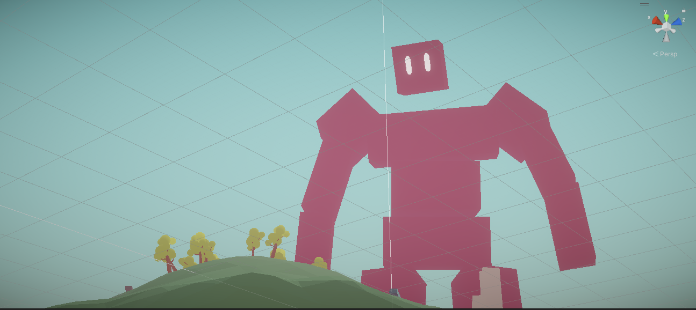

Handmade 3D Game Engine (C/C++/Zig)

This passion project is a fully featured game engine framework designed to be immediately useful without sacrificing low-level power. It emphasizes utility, scalability, and adaptability, with minimal dependencies (more details here).
Here is a list of features that I implemented from scratch:
-
GLTF (JSON) parser + importer
- Takes in 3D asset files and imports them into your game application with a single function call!
- Creates a parse tree representation of the file, which is used to reconstruct the data in-engine.
- Supports 3D meshes, animations, textures, and materials.
-
Animation System
- Full support for 3D animations.
- Animation blending and transitions work efficiently.
-
Data-Oriented Entity Component System
- A dynamic system that replaces inheritance by using collections of components. Anything can become anything else in your game.
- Component data is stored in contiguous arrays, saving storage over traditional plain structs with fields.
- The "Archetype" technique is used to optimize for entity iteration speed, which is huge for having lots of game objects!
-
Physically Based Render (PBR)
- Uses industry-standard PBR (physically based rendering) techniques to create realistic visuals.
-
Collision System
- Ray-casts, time-of-impact calculation, GJK-based collision detection and solver.
- Octree-based spatial acceleration structure to narrow only to potential collisions.
- Collision functions come in general-use variants and single-use variants.
-
Multithreaded Parallelism
- Worker threads are used to process entities in parallel.
- The audio engine uses a dedicated thread without using mutex locks.
Other Thing